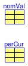

This package contains performance curves for the cooling capacity and the EIR of DX cooling coils. For performance data of specific DX cooling coils, see the packages Buildings.Fluid.HeatExchangers.DXCoils.Data.SingleSpeed and Buildings.Fluid.HeatExchangers.DXCoils.Data.DoubleSpeed.
The data are described in Buildings.Fluid.HeatExchangers.DXCoils.Data.BaseClasses.DXCoil.
Extends from Modelica.Icons.BasesPackage (Icon for packages containing base classes).
| Name | Description |
|---|---|
| Generic data record for a stage of a DX coil | |
| Data record of nominal values | |
| Data record for a performance curve | |
| Converts the nominal values to a string representation |
 Buildings.Fluid.HeatExchangers.DXCoils.Data.Generic.BaseClasses.Stage
Buildings.Fluid.HeatExchangers.DXCoils.Data.Generic.BaseClasses.Stage
This is the base record for DX cooling coil model at a compressor speed. See the information section of Buildings.Fluid.HeatExchangers.DXCoils.Data.Generic.DXCoil for a description of the data.
Extends from Modelica.Icons.Record (Icon for records).
| Type | Name | Default | Description |
|---|---|---|---|
| AngularVelocity | spe | Rotational speed [rad/s] | |
| NominalValues | nomVal | Nominal values | |
| PerformanceCurve | perCur | Performance curves for this stage |
record Stage "Generic data record for a stage of a DX coil"
extends Modelica.Icons.Record;
parameter Modelica.SIunits.AngularVelocity spe(displayUnit="1/min")
"Rotational speed";
parameter Buildings.Fluid.HeatExchangers.DXCoils.Data.Generic.BaseClasses.NominalValues
nomVal "Nominal values";
parameter Buildings.Fluid.HeatExchangers.DXCoils.Data.Generic.BaseClasses.PerformanceCurve
perCur "Performance curves for this stage";
end Stage;
Buildings.Fluid.HeatExchangers.DXCoils.Data.Generic.BaseClasses.NominalValues
This is the base record of nominal values for DX cooling coil models.
See the information section of Buildings.Fluid.HeatExchangers.DXCoils.Data.Generic.DXCoil for a description of the data.
Extends from Modelica.Icons.Record (Icon for records).
| Type | Name | Default | Description |
|---|---|---|---|
| Nominal condition | |||
| HeatFlowRate | Q_flow_nominal | Nominal cooling capacity (negative number) [W] | |
| Real | COP_nominal | Nominal coefficient of performance | |
| Real | SHR_nominal | Nominal sensible heat ratio | |
| MassFlowRate | m_flow_nominal | Nominal air mass flow rate [kg/s] | |
| Temperature | TEvaIn_nominal | 273.15 + 19.4 | Evaporator entering air dry-bulb temperature at rating condition [K] |
| Temperature | TConIn_nominal | 308.15 | Condenser entering air temperature at rating condition (wet bulb for evaporative cooled coils, dry bulb otherwise) [K] |
| Pressure | p_nominal | 101325 | Atmospheric pressure [Pa] |
| Nominal | |||
| Real | phiIn_nominal | 0.5 | Relative humidity of entering air at nominal condition |
| Re-evaporation data | |||
| Time | tWet | 1400 | Time until moisture drips from coil when a dry coil is switched on [s] |
| Real | gamma | 1.5 | Ratio of evaporation heat transfer divided by latent heat transfer at nominal conditions |
record NominalValues "Data record of nominal values"
extends Modelica.Icons.Record;
//-----------------------------Nominal conditions-----------------------------//
parameter Modelica.SIunits.HeatFlowRate Q_flow_nominal(max=0)
"Nominal cooling capacity (negative number)";
parameter Real COP_nominal "Nominal coefficient of performance";
parameter Real SHR_nominal "Nominal sensible heat ratio";
parameter Modelica.SIunits.MassFlowRate m_flow_nominal
"Nominal air mass flow rate";
parameter Modelica.SIunits.Temperature TEvaIn_nominal=273.15+19.4
"Evaporator entering air dry-bulb temperature at rating condition";
parameter Modelica.SIunits.Temperature TConIn_nominal=308.15
"Condenser entering air temperature at rating condition (wet bulb for evaporative cooled coils, dry bulb otherwise)";
parameter Real phiIn_nominal=0.5
"Relative humidity of entering air at nominal condition";
parameter Modelica.SIunits.Pressure p_nominal=101325 "Atmospheric pressure";
parameter Modelica.SIunits.Time tWet = 1400
"Time until moisture drips from coil when a dry coil is switched on";
parameter Real gamma(min=0) = 1.5
"Ratio of evaporation heat transfer divided by latent heat transfer at nominal conditions";
end NominalValues;
Buildings.Fluid.HeatExchangers.DXCoils.Data.Generic.BaseClasses.PerformanceCurve
This record declares the data used to specify performance curves for DX coils.
See the information section of Buildings.Fluid.HeatExchangers.DXCoils.Data.Generic.DXCoil for a description of the data.
Extends from Modelica.Icons.Record (Icon for records).
| Type | Name | Default | Description |
|---|---|---|---|
| Performance curves | |||
| Real | capFunT[6] | Biquadratic coefficients for cooling capacity function of temperature | |
| Real | capFunFF[:] | Polynomial coefficients for cooling capacity function of flow fration | |
| Real | EIRFunT[6] | Biquadratic coefficients for EIR function of temperature | |
| Real | EIRFunFF[:] | Polynomial coefficients for EIR function of flow fration | |
| Minimum and maximum values | |||
| Temperature | TConInMin | Minimum condenser inlet temperature for cooling capacity function [K] | |
| Temperature | TConInMax | Maximum condenser inlet temperature for cooling capacity function [K] | |
| Temperature | TEvaInMin | Minimum evaporator inlet temperature for cooling capacity function [K] | |
| Temperature | TEvaInMax | Maximum evaporator inlet temperature for cooling capacity function [K] | |
| Real | ffMin | Minimum flow fraction for which performance data are valid | |
| Real | ffMax | Maximum flow fraction for which performance data are valid | |
record PerformanceCurve "Data record for a performance curve"
extends Modelica.Icons.Record;
//-----------------------------Performance curves-----------------------------//
parameter Real capFunT[6]
"Biquadratic coefficients for cooling capacity function of temperature";
parameter Real capFunFF[:]
"Polynomial coefficients for cooling capacity function of flow fration";
parameter Real EIRFunT[6]
"Biquadratic coefficients for EIR function of temperature";
parameter Real EIRFunFF[:]
"Polynomial coefficients for EIR function of flow fration";
//------------------------Range for performance curves------------------------//
parameter Modelica.SIunits.Temperature TConInMin
"Minimum condenser inlet temperature for cooling capacity function";
parameter Modelica.SIunits.Temperature TConInMax
"Maximum condenser inlet temperature for cooling capacity function";
parameter Modelica.SIunits.Temperature TEvaInMin
"Minimum evaporator inlet temperature for cooling capacity function";
parameter Modelica.SIunits.Temperature TEvaInMax
"Maximum evaporator inlet temperature for cooling capacity function";
parameter Real ffMin
"Minimum flow fraction for which performance data are valid";
parameter Real ffMax
"Maximum flow fraction for which performance data are valid";
end PerformanceCurve;
 Buildings.Fluid.HeatExchangers.DXCoils.Data.Generic.BaseClasses.nominalValuesToString
Buildings.Fluid.HeatExchangers.DXCoils.Data.Generic.BaseClasses.nominalValuesToString
Returns a string representation of the nominal values.
Extends from Modelica.Icons.Function (Icon for functions).
| Type | Name | Default | Description |
|---|---|---|---|
| NominalValues | nomVal | Nominal values |
| Type | Name | Description |
|---|---|---|
| String | s | A string representation of the nominal values |
function nominalValuesToString
"Converts the nominal values to a string representation"
extends Modelica.Icons.Function;
input Buildings.Fluid.HeatExchangers.DXCoils.Data.Generic.BaseClasses.NominalValues
nomVal "Nominal values";
output String s "A string representation of the nominal values";
algorithm
s :="Nominal values:
Q_flow_nominal = " + String(nomVal.Q_flow_nominal) + "
COP_nominal = " + String(nomVal.COP_nominal) + "
m_flow_nominal = " + String(nomVal.m_flow_nominal) + "
TEvaIn_nominal = " + String(nomVal.TEvaIn_nominal) + " (= " + String(nomVal.TEvaIn_nominal-273.15) + " degC)
TConIn_nominal = " + String(nomVal.TConIn_nominal) + " (= " + String(nomVal.TConIn_nominal-273.15) + " degC)
phiIn_nominal = " + String(nomVal.phiIn_nominal) + "
tWet = " + String(nomVal.tWet) + "
gamma = " + String(nomVal.gamma) + "
p_nominal = " + String(nomVal.p_nominal) + "
";
end nominalValuesToString;